A fourth generation family farm in Brunswick, NY, practicing no-till organic methods and growing fresh vegetables year-round for our community
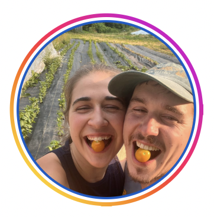
Sprouting Heart Farm is operated by Julia Sovey and Anthony Grab on Anthony's fourth generation family farm in Brunswick, NY. We're passionate about growing nutrient-dense vegetables using sustainable, no-till organic methods.
Using high tunnels and season extension techniques, we grow a wide variety of fresh vegetables year-round. Every crop is grown with integrated pest management, crop rotation, cover crops, and only organic materials—for the health of our community, the environment, and ourselves.
Visit us at the Troy Farmers Market every Saturday to see our fresh harvest and meet the farmers
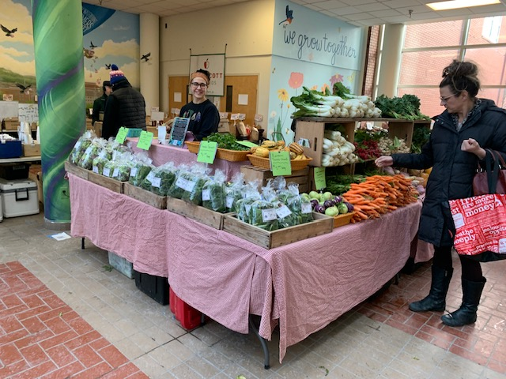
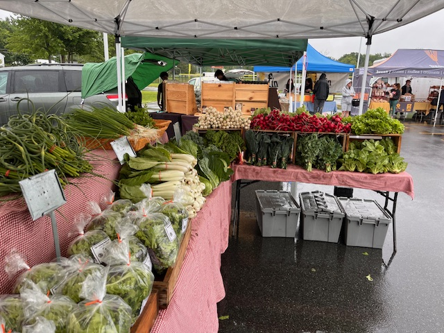
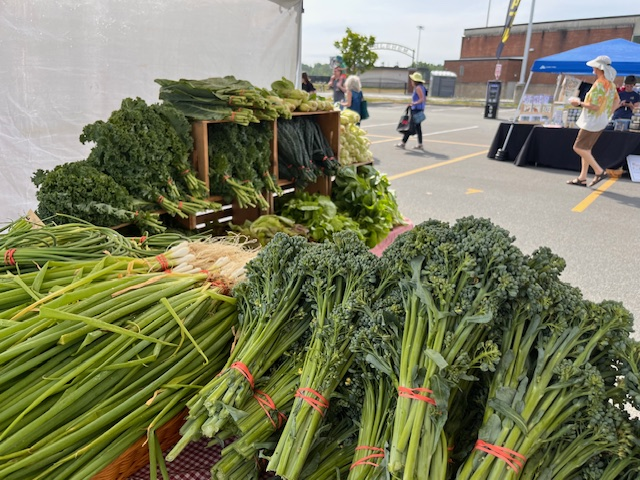
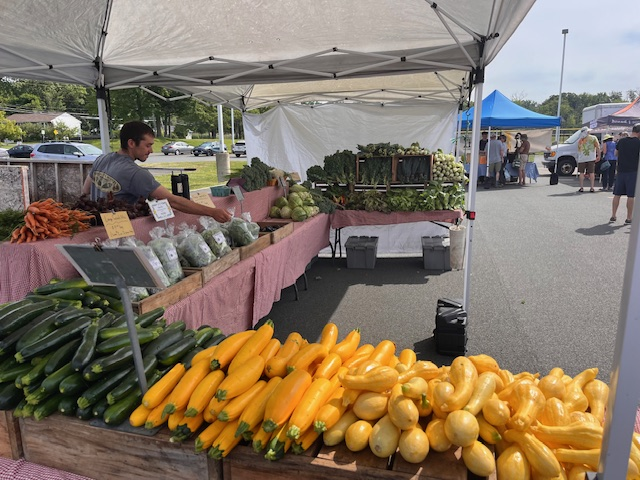
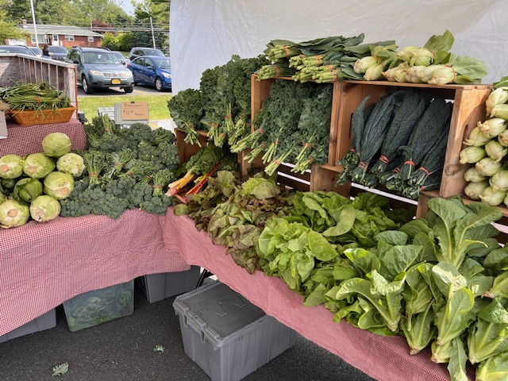
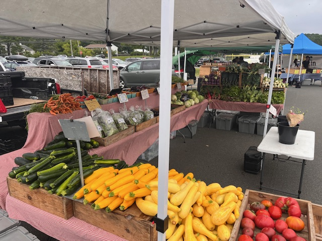
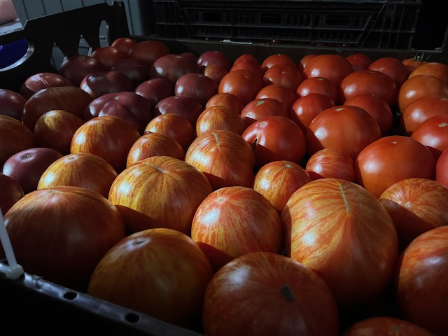
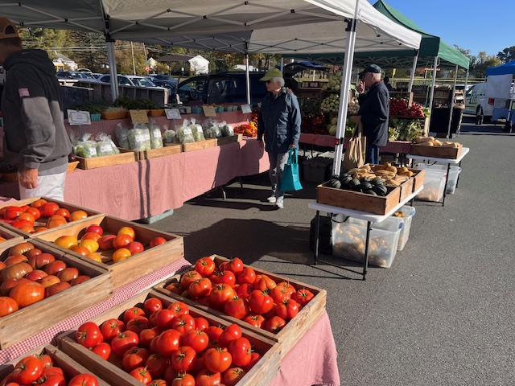
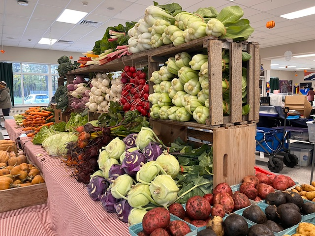
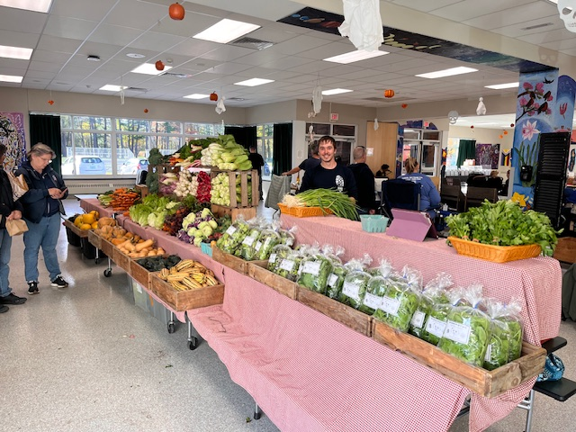
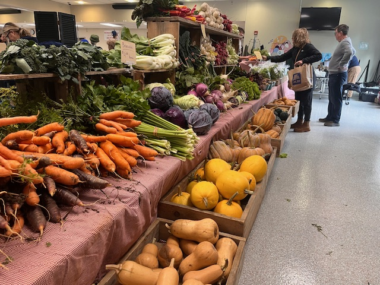
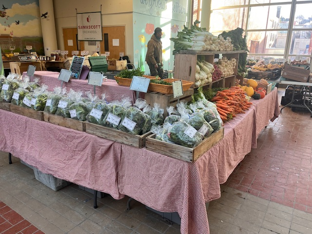
Take a glimpse into our daily work growing fresh, organic vegetables year-round
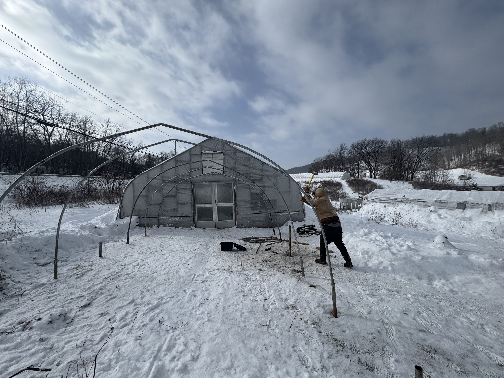
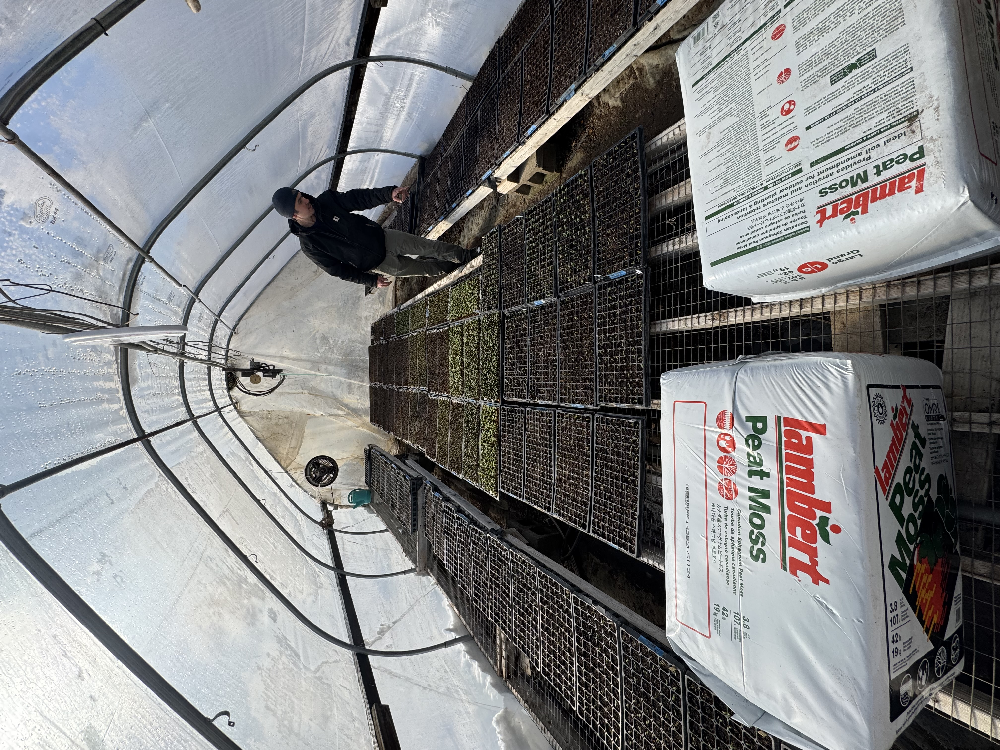
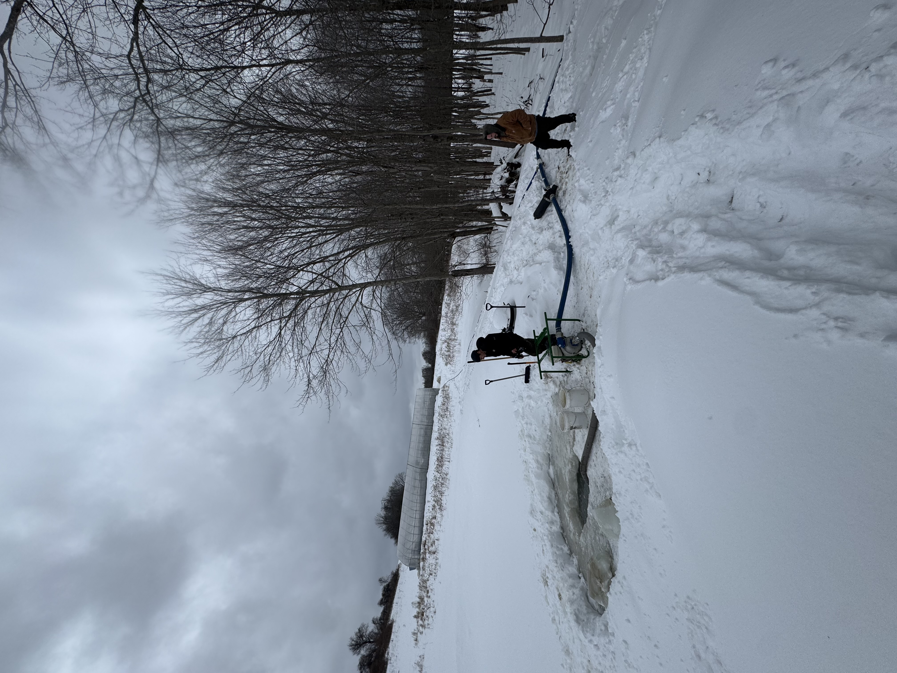
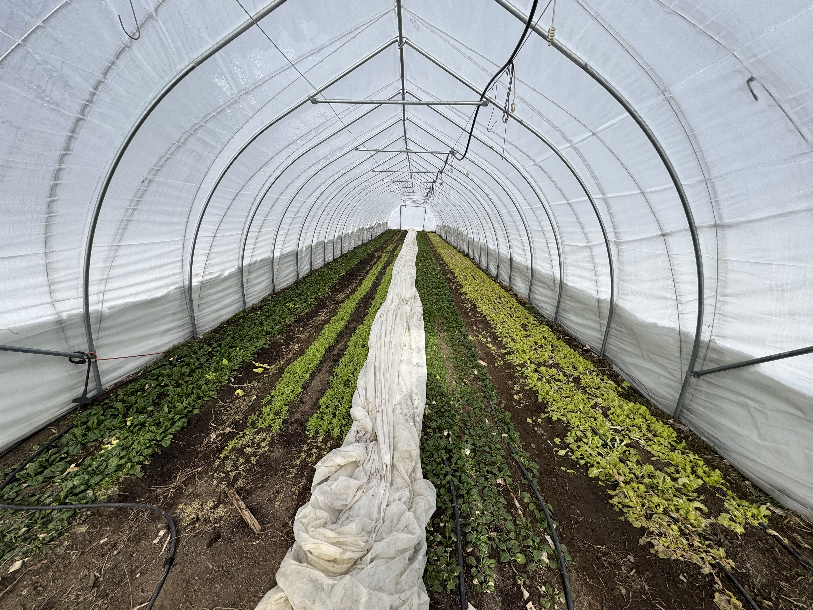
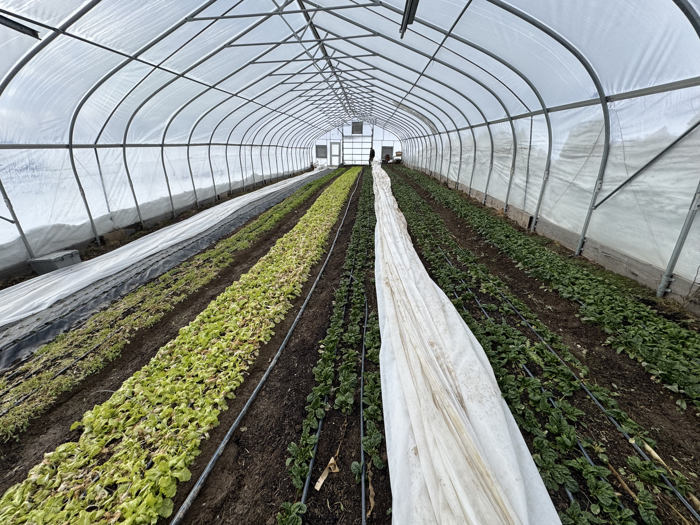
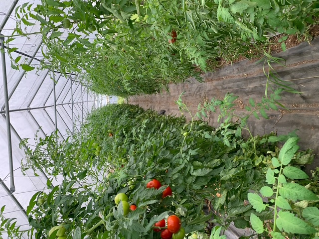
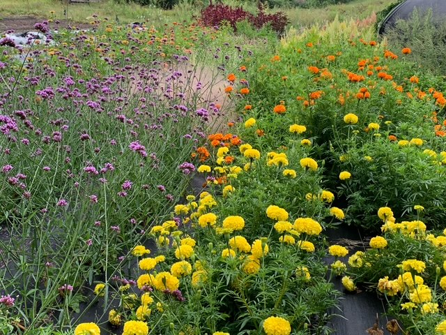
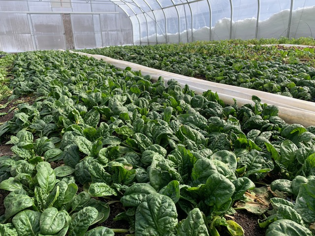
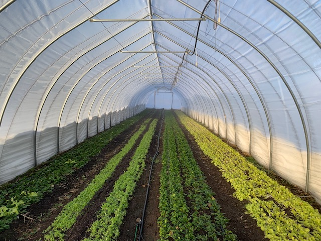
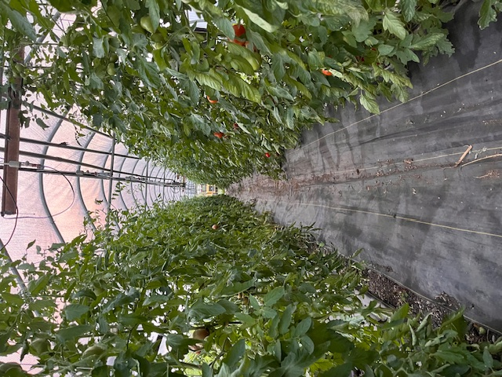
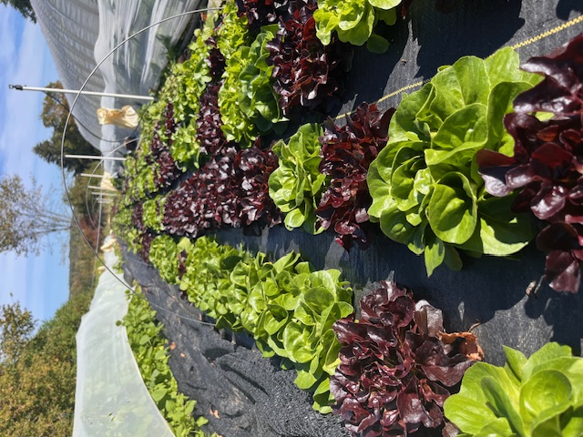
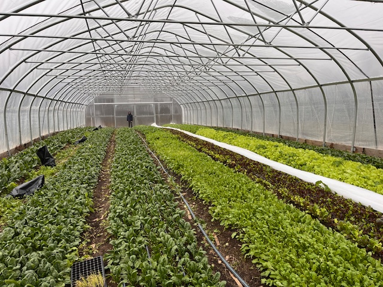
Have questions? Want to visit the farm? We'd love to hear from you.